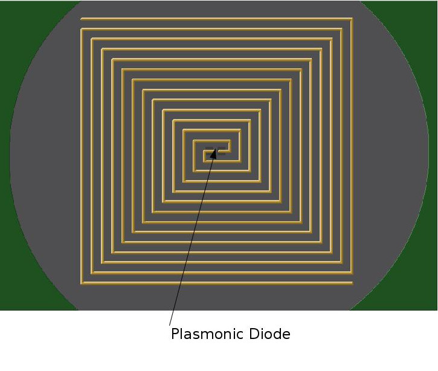

NOVEL INFRARED SENSORS AND APPLICATIONS
Elijah R. Jensen B.S. M.S. Physics Dept.
University of Louisville
Educational Background:
2015: UofL M.S. in Physics
2013: University of Vermont ECE Dept.
2012: Austin Peay State University B.S. in Physics (Magna Cum Laude)
What is IR?
300Ghz -> 430Thz
1mm -> 700nm
1mm -> 700nm
Questions:
What can we DO with IR sensing?
What is the current state of affairs in IR sensing?
How can we improve our technology?
- Astronomy
- Seismic Sensing
- Health Monitoring
- Structural Health
- Reliability Analysis
- Biology
Astronomy

Seismic Sensing NFS Train (24bit)
Health Monitoring/Diagnostics
- Pulse/Heart Rate/ O2 levels
- Vein Health/ Blood Pressure?
Structural Health/Reliability Analysis
- Machinery/Equipment/Vehicles
- Bridges/Public Works
Machine Vision
Key Objectives:
- Develop Novel Experimental Hardware
- Develop Algorithms and Tests for Hardware
- Prototype/POC leading edge detectors
Develop Novel Experimental Hardware:
- 32 Bit ADC
- InGaAs Peltier Cooled Camera 128x128
- Dual Vis-IR Camera
- Dual Cooled InGaAs Peltier Camera
- Graphene MIIM Detector
32 bit DAQ

32 bit DAQ
IR Camera Design
+  + DAQ = HDR Camera
+ DAQ = HDR Camera
+ DAQ = HDR Camera
Vis-IR Camera Design
+
+ + 32bit DAQ = VHDR Camera
Key Objectives:
- Develop Novel Experimental Hardware
- Develop Algorithms and Tests for Hardware
- Prototype/POC leading edge detectors
Develop Algorithms and Tests for Hardware
- 2D FFT
- 2D FFT Embedded Real Time
- Dual 1D-FFT-Peak Sensing Real Time Code
- Dual 2D-FFT-Peak Sensing Real Time Code
Dual 1D-FFT-Peak Sensing Real Time Code
2D-FFT-Peak Sensing Real Time Code
Develop Algorithms and Tests for Hardware: Embedded
Camera should do processing "itself"
Key Objectives:
- Develop Novel Experimental Hardware
- Develop Algorithms and Tests for Hardware
- Prototype/POC leading edge detectors
What is Light?
Light waves
are Electric and
Magnetic Fields that propagate through space.
History:
Bolometers Photon Capture MethodsLets treat the light as a Wave!

Micro-Nano Antenna Structures!
 Steven Novack et. al. (Optical Antennas)
Steven Novack et. al. (Optical Antennas)
Steven Novack et. al. (Optical Antennas)
Benefits
- Operate at Room Temp.
- Possibility of Ultra High Bandwidth
- Possibility of Ultra Low Bandwidth (Spectrometer)
- Fast
- Skin Effect Heating
- Rectification
Rectification
~Dual Layer MIIM tunneling diode
- Diode Parasitic Capacitance
- Diode Resistance
~Dual Layer MIIM tunneling diode
Skin Effect
Caused by opposing eddy currents induced by the changing magnetic field.
Copper ~= 7.5nm. So how do we solve this problem?
Graphene!
Copper ~= 7.5nm. So how do we solve this problem?
Graphene!
Designs:
High Bandwidth Antenna Design : Spiral
Low Bandwidth Antenna Design : Dipole
Diode: Plasmonic Wave guide MIIM Diode
Device Design
 Replace M1 and M2 with Graphene for Room Temp. SIS detector.
Replace M1 and M2 with Graphene for Room Temp. SIS detector.
Replace M1 and M2 with Graphene for Room Temp. SIS detector.
Device Design

Reverse Design for Better Efficiency?
Fabrication:
CVD
Thermal Deposition or Sputtering
Photolithography
2 year Project Outline
 See Packet for more Information.
See Packet for more Information.
See Packet for more Information.
References:
http://earthguide.ucsd.edu/eoc/special_topics/teach/sp_climate_change/images/atmo_transmittance_med.jpg
http://www.hamamatsu.com/resources/pdf/ssd/g12242-0707w_kmir1022e.pdf
http://www.hamamatsu.com/jp/en/G12242-0707W.html
http://www.nearinfraredimaging.com/
http://coolcosmos.ipac.caltech.edu/cosmic_classroom/ir_tutorial/images/em3.jpg
http://www.rdi-technologies.com/bridgeview/
http://antonirogalski.com/wp-content/uploads/2012/12/History-of-infrared-detectors.pdf
https://en.wikipedia.org/wiki/Superconducting_tunnel_junction
https://en.wikipedia.org/wiki/Infrared
http://pubs.acs.org/doi/pdf/10.1021/nl301774e
https://en.wikipedia.org/wiki/Skin_effect#/media/File:Skin_depth.svg
http://coolcadelectronics.com/portfolio-item/infrared-rectennas/
https://en.wikipedia.org/wiki/Near-infrared_window_in_biological_tissue
https://en.wikipedia.org/wiki/Photolithography
Thank you!
Questions? Queries? Posers?